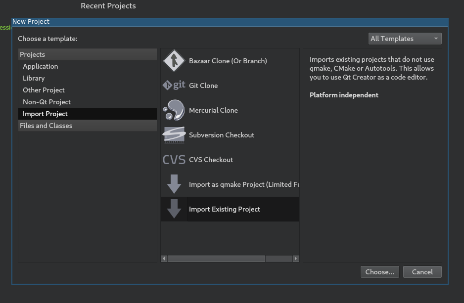
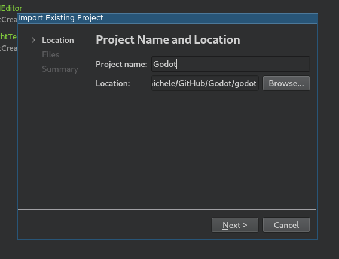
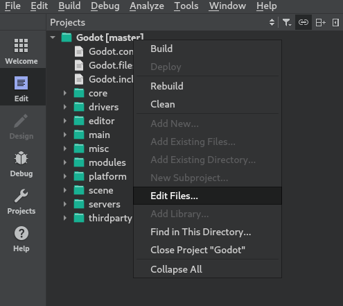
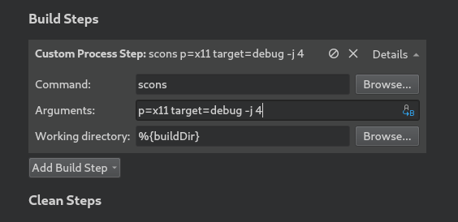
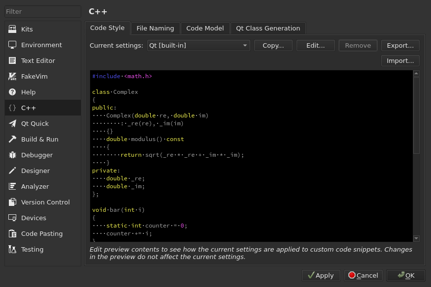

Qt Creator
Qt Creator is a free, open source IDE for all desktop platforms.
Importing the project
From the Qt Creator's main screen select New Project > Import Project > Import Existing Project.

Under Location select the Godot root folder.

Next, you can choose which folders and files will be visible to the project. While C/C++ files are added automatically, other extensions can be potentially useful:
*.glslfor shader files,*.pyfor buildsystem files,*.javafor Android platform development,*.mmfor macOS platform development.

Note
You can change this configuration later by right-clicking on your project and selecting the Edit Files... option.

Finish the import.
Open the
project_name.includesfile and add a line containing.to it to correctly enable the code completion.

From the left-side menu select Projects and open the Build tab.
Delete the predefined
makebuild step.

Click Add Build Step > Custom Process Step to add a new build step with the following settings:
Command
scons
Arguments
See Introduction to the buildsystem for a full list of arguments.

Note
If the build fails with Could not start process "scons", it can mean that scons
is not in your PATH environment variable. In this case, you'll have to specify the
full path to the SCons binary.
Debugging the project
From the left-side menu select Projects and open the Run tab.
Under Executable specify the path to your executable located in the
<Godot root directory>/binfolder. The name depends on your build configuration, e.g.godot.linuxbsd.editor.dev.x86_64for 64-bit LinuxBSD platform withplatform=editoranddev_build=yes. You can use%{buildDir}to reference the project root, e.g:%{buildDir}/bin/godot.linuxbsd.editor.dev.x86_64.If you want to run a specific project, specify its root folder under Working directory.
If you want to run the editor, add
-eto the Command line arguments field.

To learn more about command line arguments, refer to the command line tutorial.
Code style configuration
Developers must follow the project's code style and the IDE should help them follow it. By default, Qt Creator uses spaces for indentation which doesn't match the Godot code style guidelines. You can change this behavior by changing the Code Style in Tools > Options > C++.

Click on Edit to change the current settings, then click on Copy Built-in Code Style button to set a new code style. Set a name for it (e.g. Godot) and change the Tab policy to be Tabs Only.

If you run into any issues, ask for help in one of Godot's community channels.